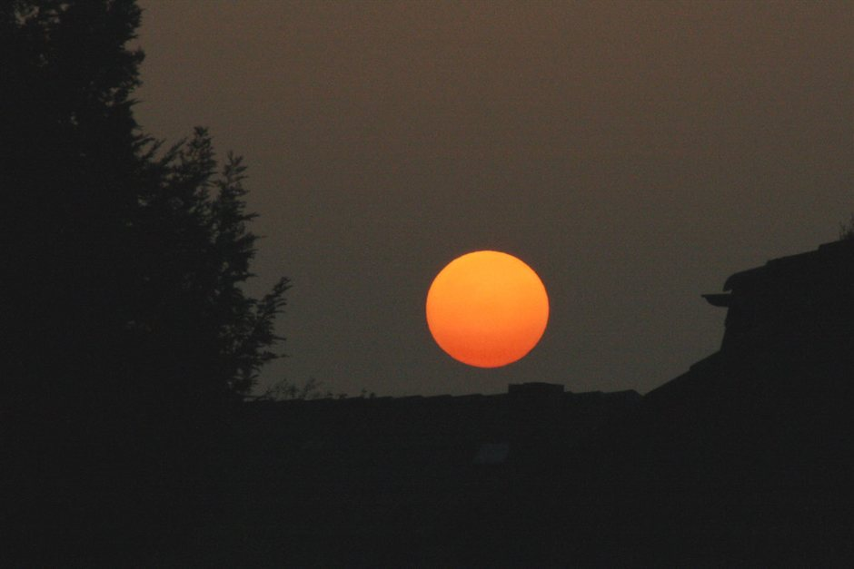

July and August bring relentless afternoon temperatures to the Erg Chebbi dunes, often crossing 45°C (113°F) in the shade. While tour operators will happily book you a trip, we prefer to be upfront about the physical toll high summer takes. This is not brochure copy about magical Arabian nights; it is a practical briefing on how to handle real heat without ruining your holiday.
The biggest mistake travelers make is expecting European-style climate control in the middle of the Sahara. Power grids are strained, solar setups have limits, and mud-brick buildings or standard desert tents react differently to extreme ambient temperatures than modern concrete hotels. Here is how we manage the route, the camps, and your daily schedule when the sun is at its fiercest.
The Reality of Desert Air Conditioning
Let us clear up the myth of universal air conditioning in the Sahara. In standard desert camps, tents are made of heavy canvas over metal or wooden frames. While luxury and standard camps increasingly feature AC units or powerful cooling fans, they struggle to combat 40-degree heat while the sun is up. The units generally cool the interior down by a noticeable margin, but midday in a tent remains warm.
Furthermore, remote desert locations rely on generator power or solar battery banks. Overloads happen, and grid reliability in deep southern Morocco fluctuates during peak summer tourist months. If uninterrupted, ice-cold air conditioning is your absolute top priority for every single minute of the day, a July desert trip might test your patience. By evening, however, once the sun drops below the horizon, temperatures break sharply, and the tents cool down significantly.
- Luxury camps have better inverter AC units than standard camps.
- Midday tent interiors remain warm despite running units.
- Generators usually run through the evening and night for sleeping comfort.
Adjusting the Daily Schedule
To survive and enjoy the desert in high summer, we completely flip the traditional daily rhythm. The hours between 12:00 PM and 4:30 PM are non-negotiable downtime. You should not be out on the open sand, climbing dunes, or taking long walks during this window. We ensure our vehicles have strong AC for the transit stretches, positioning you inside shaded guesthouses, Kasbah lounges, or air-cooled common areas during the peak heat.
Camel treks and outdoor activities are strictly pushed to the margins of the day. You will mount your camels just as the sun dips low enough to cast long shadows across the Erg Chebbi ridges, arriving at camp around sunset. Morning departures happen earlier than usual, getting you off the dunes before the thermal radiation bounces intensely off the sand.
- No open-dune trekking between noon and late afternoon.
- Camel rides shifted to late evening and early dawn.
- Transit hours scheduled around shaded roadside stops.
Vehicle AC and Road Transit Realities
Traveling from Marrakesh or Fes to Merzouga in July means crossing the High Atlas mountains and the barren plains of the desert fringe. Your vehicle's air conditioning system will work overtime. Older shared grand taxis often struggle with cabin cooling in extreme heat, which is why we strictly recommend private or well-maintained van-vs-4x4-sahara-desert-tour options equipped with heavy-duty climate control.
Keep in mind that when the vehicle stops for photos or lunch, the AC stops too. The sudden rush of dry, superheated air the moment you open the door can feel like stepping into an oven. Drink water continuously inside the vehicle, even if you do not feel actively thirsty; the dry desert air evaporates sweat instantly, masking your dehydration levels.
- Ensure your transport has serviced, heavy-duty cabin cooling.
- Expect rapid heat spikes during brief roadside stops.
- Hydration is critical inside moving vehicles due to rapid evaporation.
Clothing, Skin Protection, and Heat Management
Counterintuitively, wearing less clothing does not keep you cooler in the Sahara. Direct sun exposure quickly causes severe burns and dehydrates the body faster. Local nomads wear loose, flowing cotton or linen robes (what-to-wear) that cover arms and legs. Light colors reflect solar radiation, and a traditional turban or scarf protects your neck and face from hot winds.
Electrolytes are just as important as plain water. Sweating profusely in 45-degree heat flushes essential salts from your system. Pack oral rehydration salts or stock up on mineral-rich bottled water at village shops along the route. Avoid heavy, greasy roadside meals during the midday push; stick to fresh salads, tagines with plenty of vegetables, and hydrating fruits like watermelon.
- Wear loose, long-sleeved, light-colored natural fabrics.
- Add electrolyte powders or salt tablets to your drinking water.
- Eat light, water-rich foods during peak heat hours.
| Standard Season (Spring/Autumn) | High Summer (July/August) | |
|---|---|---|
| Midday Temp | 25°C to 32°C | 40°C to 48°C+ |
| Tent AC | Rarely needed | Essential (with limitations) |
| Camel Trek Time | Late afternoon (4:30 PM) | Sunset edge (6:30 PM) |
| Hydration Need | 2 to 3 liters/day | 4 to 6 liters/day |
| Pacing | Active exploring | Strict midday siesta |

Illustration, not a photograph — for the real thing, you'll have to stand on the ridge yourself.
Quick answers
A few follow-up questions travelers ask about this.
Do desert camps have air conditioning in July?
Luxury and comfort camps do feature AC units or powerful fans, but grid limits and intense ambient heat mean they moderate the temperature rather than freezing the tent. Standard camps may only have basic fans.
Is it too hot to ride camels in the summer?
We strictly schedule camel treks for early morning or right at sunset when the sand cools down. Daytime camel riding in July is dangerous due to heatstroke risks.
What should I pack specifically for summer in the Sahara?
Pack loose linen or cotton clothing covering your limbs, a desert scarf for sun and dust protection, high-SPF sunscreen, electrolyte packets, and refillable water bottles.
Planning your own route?
Tell us your dates and what matters to you — we'll answer with a straight recommendation, not a brochure.
Send an inquiry See the itineraries